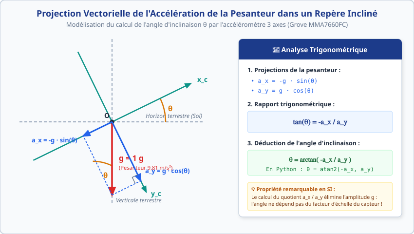

Niveau : Terminale SI / Spécialité SI
Durée conseillée : 3h30 à 4h00
Poste / Binôme : ..................
Évaluation : ..... / 20
Chaîne d'Information : Restitution Visuelle & Interface Homme-Machine (IHM)
Bargraph LED Bar v2.0, Capteur DHT & Supervision Graphique PC en Python (Tkinter) — MicroPython & Python 3
📌 Objectifs & Compétences du Programme de Terminale SI
- Compétence B2 / CO2.1 : Caractériser les échanges d'information entre composants (liaison série synchrone propriétaire 2 fils et communication série USB).
- Compétence C1 / CO3.1 : Concevoir et implanter une structure algorithmique de restitution et d'acquisition en langage MicroPython sur microcontrôleur Raspberry Pi Pico (RP2040).
- Compétence C2 / CO3.2 : Concevoir et mettre en œuvre une Interface Homme-Machine (IHM) adaptée aux contraintes d'exploitation (jauge analogique discrétisée sur bargraph et supervision graphique sur PC avec Tkinter).
- Compétence D1 / CO4.1 : Exploiter la documentation technique constructeur pour configurer un périphérique numérique (registres de commande, protocole 1-wire, chronogrammes).
- Compétence D2 / CO4.2 : Valider expérimentalement le fonctionnement de la chaîne d'information complète : Acquérir (Capteur DHT) → Traiter (Pico RP2040) → Transmettre (USB) → Restituer (IHM Tkinter).
🧭 Contexte & Continuité avec le TP Précédent
Lors du TP précédent (Représentation & Modélisation des Mesures Physiques), vous avez :
- Conditionné une thermistance CTN 10 kΩ dans un pont diviseur de tension alimenté sous 3,3 V.
- Modélisé mathématiquement la loi de comportement thermique de la sonde (T = f(R) sous forme logarithmique ou polynomiale) avec un coefficient R² ≥ 0,98.
- Implanté ce modèle mathématique dans un programme MicroPython sur Raspberry Pi Pico afin de calculer et d'afficher la température en °C dans la console texte de Thonny.
Problématique d'Ingénierie : Dans un système moderne (armoire électrique, serre agricole connectée, couveuse néonatale ou centrale de traitement d'air), les grandeurs physiques mesurées doivent être restituées sous deux formes complémentaires :
- Une restitution matérielle locale immédiate : Un afficheur bargraph à 10 DELs (Grove LED Bar v2.0) dont la hauteur s'allume en proportion d'une commande analogique (potentiomètre).
- Une supervision graphique à distance (IHM) : Une interface graphique sur ordinateur développée en Python avec la bibliothèque standard Tkinter, affichant en temps réel la température (°C) et l'humidité relative (%) mesurées par un capteur numérique DHT, ainsi qu'un badge dynamique d'état de confort thermique (froid, confort, alerte chaleur).
Le microcontrôleur Raspberry Pi Pico acquiert les grandeurs d'entrée (potentiomètre analogique sur GP26 pour la jauge locale, puis capteur numérique DHT sur GP22 pour la surveillance thermo-hygrométrique). Il pilote directement le bargraph matériel et transmet simultanément les mesures au PC via liaison série USB pour animer l'interface graphique IHM sous Tkinter.
Partie 1 : Jauge Thermique avec le Grove LED Bar v2.0 (MY9221) Durée : 1h15
Le module Grove - LED Bar v2.0 est un composant d'affichage composé de 10 segments à DELs : 1 DEL rouge, 1 DEL jaune/orange, 1 DEL vert clair et 7 DELs vertes. Il est piloté par un circuit intégré spécialisé MY9221 (pilote de DELs à courant constant 12 canaux).
https://www.seeedstudio.com/Grove-LED-Bar-v2-0.html
1.1. Câblage Matériel du Module sur Raspberry Pi Pico
Contrairement à des composants analogiques ou I²C standards, le MY9221 utilise une liaison série synchrone propriétaire à 2 fils (horloge DCKI et données DI) :
• Broche Grove 1 (Fil Jaune) : DI (Data In) → Relier à la broche GP16 (broche physique 21)
• Broche Grove 2 (Fil Blanc) : DCKI (Clock In) → Relier à la broche GP17 (broche physique 22)
• Broche Grove 3 (Fil Rouge) : VCC (Alimentation) → Relier au 3V3 (Pin 36) ou 5V (VBUS Pin 40)
• Broche Grove 4 (Fil Noir) : GND (Masse) → Relier à un GND (Pin 18, 23 ou 38)
1.2. Principe de Fonctionnement du Contrôleur MY9221
Le circuit MY9221 contient un registre à décalage interne de 208 bits. À chaque impulsion sur la broche d'horloge DCKI, un bit présent sur la ligne DI est mémorisé. Une fois les données transmises (1 mot de commande + 12 canaux de luminosité), un signal spécifique appelé latch (maintien à 0 puis 4 impulsions consécutives sur DI) applique l'état aux DELs physiques.
1.3. Installation & Utilisation de la Bibliothèque Pilote my9221.py
Plutôt que de reprogrammer manuellement le protocole série bas niveau et le registre à décalage de 208 bits dans chaque script, nous allons utiliser en ingénierie une bibliothèque pilote (driver) éprouvée et modulaire : micropython-my9221.
📚 Interface de Programmation (API) de la Bibliothèque my9221
Une fois my9221.py présent sur la carte, vous disposez d'une classe très simple d'emploi :
from my9221 import MY9221: Importation du pilote.barre = MY9221(di=Pin(16), dcki=Pin(17), reverse=False): Instanciation de l'objet sur les broches matérielles. Le paramètrereverse=Truepermet d'inverser le sens de lecture si nécessaire.barre.level(val, brightness=255): Méthode principale de jauge. AllumevalDELs consécutives (avecvalentier de 0 à 10).barre.bits(masque, brightness=255): Allume individuellement les DELs selon un masque binaire (ex.0b1000000001pour allumer la première et la dernière).
1.4. Code de Base Fourni : Chenillard & Allumage des DELs une par une
Créez un nouveau fichier dans Thonny nommé test_led_bar_base.py. Vous remarquerez que le code est désormais beaucoup plus court et lisible grâce à l'importation de la bibliothèque :
# ==============================================================================
# TP TERMINALE SI — TEST DU GROVE LED BAR v2.0 (MY9221)
# Matériel : Raspberry Pi Pico + Grove LED Bar v2.0
# Prérequis : Le fichier my9221.py doit être téléversé sur la Pico !
# ==============================================================================
import time
from machine import Pin
from my9221 import MY9221
# 1. Initialisation du bargraph avec les broches DI (GP16) et DCKI (GP17)
barre = MY9221(di=Pin(16), dcki=Pin(17), reverse=False)
print("=== TEST DU GROVE LED BAR (LIBRAIRIE MY9221) : CHENILLARD ===")
# Boucle de démonstration : Allumage progressif de 0 à 10 DELs
while True:
print("\n--- Montée de la jauge (0 à 10 DELs) ---")
for nb_leds in range(11):
print(f"DELs allumées : {nb_leds} / 10")
barre.level(nb_leds) # Commande directe du nombre de DELs
time.sleep(0.3)
time.sleep(1.0)
print("--- Extinction complète ---")
barre.level(0)
time.sleep(0.8)Questions d'Analyse — Partie 1 :
Q1. Exécutez le script ci-dessus. Observez la disposition des couleurs des DELs lorsque nb_leds = 10. Quelle est la couleur de la première DEL allumée ? Quelle est la couleur de la 10e DEL ? Quel paramètre de l'instruction MY9221(...) permet d'inverser le sens d'allumage ?
Q2. Pourquoi le module Grove LED Bar nécessite-t-il un circuit spécialisé comme le MY9221 au lieu de relier directement les 10 DELs aux broches du microcontrôleur ? Justifiez en termes de nombre d'entrées/sorties (GPIO) et de courant électrique consommé.
1.5. Travail Demandé aux Élèves : Pilotage du Bargraph par Potentiomètre (Jauge Analogique)
Pour piloter la jauge de manière fluide et intuitive, nous utilisons un potentiomètre analogique (par exemple le module Grove Rotary Angle Sensor ou un potentiomètre rotatif 10 kΩ) raccordé sur une entrée du convertisseur analogique-numérique (CAN) de la Raspberry Pi Pico plutôt que la sonde thermique CTN. Cela permet de commander et tester directement le bargraph en temps réel.
• Broche Signal (Curseur / SIG, fil jaune) : Relier à l'entrée analogique GP26 (ADC0) (broche physique 31)
• Broche Alimentation (VCC, fil rouge) : Relier au 3V3 (Pin 36)
• Broche Masse (GND, fil noir) : Relier à un GND (Pin 18, 23 ou 38)
Le microcontrôleur échantillonne la tension continue du curseur via son entrée ADC (résolution 16 bits sous MicroPython avec read_u16(), renvoyant une valeur entière N comprise entre 0 et 65535 pour une tension de 0 à 3,3 V). On définit le cahier des charges d'affichage suivant pour la jauge :
| Position du potentiomètre | Valeur ADC 16 bits (N) | Tension approximative Umes | Nombre de DELs à allumer | Segments visuels actifs |
|---|---|---|---|---|
| Butée minimale (gauche) | N < 2 000 | U < 0,10 V | 0 DEL | Aucune DEL (jauge éteinte) |
| Rotation basse (10 % à 25 %) | 2 000 ≤ N < 16 000 | 0,10 V ≤ U < 0,80 V | 1 à 2 DELs | Vertes (base de la jauge) |
| Course médiane (25 % à 65 %) | 16 000 ≤ N ≤ 42 000 | 0,80 V ≤ U ≤ 2,10 V | 3 à 6 DELs | Vertes (zone médiane) |
| Rotation haute (65 % à 90 %) | 42 000 < N ≤ 60 000 | 2,10 V < U ≤ 3,00 V | 7 à 8 DELs | Vert clair + Jaune/Orange |
| Butée maximale (droite) | N > 60 000 | U > 3,00 V | 9 à 10 DELs | Orange + Rouge sommital |
def potentiometre_vers_niveau(valeur_adc, n_min=1000, n_max=64000):
"""
TODO ÉLÈVE : Calcule le nombre de DELs à allumer (entier de 0 à 10)
en effectuant une interpolation linéaire entre n_min et n_max.
- Si valeur_adc <= n_min -> retourne 0
- Si valeur_adc >= n_max -> retourne 10
- Entre les deux : échelonner proportionnellement sur 10 segments !
"""
if valeur_adc <= n_min:
return 0
elif valeur_adc >= n_max:
return 10
else:
# TODO : Formule de proportionnalité mathématique (arrondir à l'entier)
niveau = int(...)
return niveauQuestions d'Analyse :
Q3. Écrivez la relation mathématique exacte qui exprime niveau en fonction de valeur_adc, n_min et n_max. Validez votre formule en calculant à la main le niveau obtenu pour un potentiomètre à mi-course avec N = 32500 (avec n_min = 1000 et n_max = 64000).
Q3-bis. Rédigez le script complet potentiometre_led_bar.py qui acquiert en continu l'entrée analogique GP26 dans une boucle while True:, appelle potentiometre_vers_niveau() et actualise l'afficheur avec barre.level(niveau). Testez la réactivité du bargraph en tournant le potentiomètre.
Partie 2 : Interface Graphique IHM sur PC avec Python & Tkinter (Surveillance Température & Humidité) Durée : 1h30
Dans de nombreux systèmes techniques modernes (bâtiment intelligent, serveurs de données, serres automatisées ou stations météorologiques), la surveillance des grandeurs physiques ne se limite pas à un afficheur local. Les mesures doivent être centralisées sur un poste de supervision informatique équipé d'une Interface Homme-Machine (IHM) conviviale, ergonomique et interactive.
Dans cette partie, vous allez réaliser une chaîne d'information complète :
- Acquisition embarquée (MicroPython sur Pico RP2040) : Mesure directe et étalonnée en usine de la température ambiante (°C) et de l'humidité relative (%) grâce à un capteur numérique intégré DHT (DHT11 ou DHT22).
- Transmission de données (Liaison Série USB) : Envoi périodique des mesures de la Pico vers l'ordinateur sous forme de trames textuelles structurées.
- Restitution graphique & Supervision (Python 3 sur PC) : Développement d'une interface graphique moderne avec la bibliothèque officielle Tkinter, avec affichage numérique grand format, jauge d'humidité relative et changement dynamique de code couleur selon des seuils de confort thermique.
2.1. Le Capteur Numérique Thermo-Hygrométrique DHT (DHT11 / DHT22)
Pour mesurer simultanément la température et l'humidité de l'air ambiant avec fiabilité, nous utilisons un capteur numérique DHT (DHT11 ou DHT22 / AM2302). Contrairement à une thermistance CTN qui délivre une grandeur analogique dépendante d'un pont diviseur, le capteur DHT intègre son propre microcontrôleur interne : il convertit directement les grandeurs physiques en signaux binaires transmis sur un unique fil de données (protocole série 1-Wire).
https://docs.micropython.org/en/latest/esp8266/tutorial/dht.html
Ce pilote natif MicroPython fournit directement la température en °C via
capteur.temperature() et l'humidité relative en % via capteur.humidity() après avoir déclenché une acquisition par capteur.measure().
• Broche Signal (DATA, fil jaune) : Relier à la broche numérique GP22 (broche physique 29)
• Broche Alimentation (VCC, fil rouge) : Relier au 3V3 (Pin 36)
• Broche Masse (GND, fil noir) : Relier à un GND (Pin 18, 23 ou 38)
• Liaison avec le PC : Câble micro-USB reliant la Raspberry Pi Pico à un port USB de l'ordinateur.
(Remarque : Si vous utilisez un module Grove DHT, la résistance de tirage pull-up est déjà incluse sur le module. En cas d'utilisation d'un capteur nu, ajoutez une résistance de 4,7 kΩ à 10 kΩ entre DATA et 3V3).
2.2. Programme Embarqué sur la Pico : Émission Série des Mesures (MicroPython)
Ouvrez Thonny et créez sur votre Raspberry Pi Pico le script pico_emetteur_dht.py ci-dessous. Ce programme lit le capteur toutes les 2 secondes et transmet la trame temperature,humidite sur la liaison série USB :
# ==============================================================================
# TP TERMINALE SI — STATION MÉTÉO EMBARQUÉE : ÉMETTEUR SÉRIE (PICO RP2040)
# Capteur : DHT11 (bleu) ou DHT22 (blanc) sur la broche numérique GP22
# Liaison : Port série USB (communication avec le PC exécutant l'IHM Tkinter)
# ==============================================================================
import time
from machine import Pin
import dht
# 1. Instanciation du capteur sur GP22 (DHT11 ou DHT22 selon votre matériel)
capteur = dht.DHT11(Pin(22)) # Remplacez par dht.DHT22(Pin(22)) si DHT22
print("=== PICO ÉMETTEUR DHT PRÊT ===")
while True:
try:
# Déclenchement de l'acquisition des grandeurs physiques
capteur.measure()
temp = capteur.temperature() # Température en °C
hum = capteur.humidity() # Humidité relative en %
# Envoi de la trame au format standard CSV : "temp,hum"
print(f"{temp:.1f},{hum:.1f}")
except OSError as e:
print("ERREUR_DHT")
# Temporisation obligatoire : le capteur DHT exige au moins 1,5 à 2 secondes
# d'intervalle entre deux acquisitions pour réinitialiser sa chambre de mesure !
time.sleep(2.0)2.3. Conception de l'IHM de Supervision avec Python & Tkinter
Tkinter est la bibliothèque standard d'interface graphique (GUI) de Python. Elle permet de construire des fenêtres interactives composées de conteneurs (Frame, LabelFrame) et de composants d'affichage appelés widgets :
Label: Affichage de textes fixes, de grandeurs numériques grand format ou d'étiquettes d'état stylisées.ttk.Progressbar: Barre de progression horizontale représentant graphiquement une jauge de 0 à 100 %.Button: Bouton d'action permettant par exemple à l'utilisateur de quitter proprement l'application.
⚡ Règle d'Or en Programmation Graphique Événementielle : Ne Jamais Bloquer l'IHM !
Une interface graphique repose sur une boucle événementielle continue (fenetre.mainloop()) qui écoute les clics de souris, le clavier et redessine la fenêtre à chaque instant.
❌ Erreur fatale : Si vous écrivez une boucle while True: avec un time.sleep(2) dans un programme Tkinter, l'exécution reste bloquée dans le sommeil : la fenêtre ne traite plus les messages du système d'exploitation et l'écran devient blanc avec la mention "Le programme ne répond pas" !
✅ Solution d'ingénierie : On utilise la méthode non-bloquante fenetre.after(delai_en_ms, nom_fonction). Cette méthode demande à Tkinter de planifier l'exécution de la fonction de rafraîchissement dans un temps précis (ex : 2000 ms), tout en continuant à faire tourner fluidement la boucle graphique entre-temps.
Figure 1 : Interface Homme-Machine (IHM) développée en Python standard avec tkinter. L'affichage s'actualise automatiquement toutes les 2 secondes sans bloquer l'interface grâce à fenetre.after(). Le badge de statut et sa couleur s'adaptent dynamiquement selon les seuils thermiques programmés par l'élève.
2.4. Code Python PC Fourni à Compléter : station_meteo_ihm.py
Sur votre ordinateur, ouvrez un nouvel environnement Python (VS Code, Thonny en mode Python 3 standard ou IDLE) et enregistrez le script sous le nom station_meteo_ihm.py.
Le code est fourni pour l'essentiel ; votre mission consiste à compléter les 4 sections TODO ÉLÈVE repérées dans la fonction actualiser_donnees() :
# ==============================================================================
# TP TERMINALE SI — SUPERVISION THERMO-HYGROMÉTRIQUE SUR PC AVEC PYTHON & TKINTER
# Rôle : Réception des mesures de la Pico et affichage sur une IHM graphique
# Binôme : .....................................................................
# ==============================================================================
import tkinter as tk
from tkinter import ttk
from datetime import datetime
import random
# Module série pour communiquer avec la Pico (si la bibliothèque pyserial est installée)
try:
import serial
except ImportError:
serial = None
# ------------------------------------------------------------------------------
# 1. CONFIGURATION DE LA COMMUNICATION SÉRIE / MODE SIMULATION
# ------------------------------------------------------------------------------
PORT_SERIE = "COM3" # TODO : Adapter selon le port COM de votre Pico (ex: COM4, COM5)
VITESSE_BAUDS = 115200
liaison_serie = None
if serial:
try:
liaison_serie = serial.Serial(PORT_SERIE, VITESSE_BAUDS, timeout=1)
print(f"Connexion série établie avec succès sur {PORT_SERIE}")
except Exception:
print(f"Port {PORT_SERIE} non disponible. Basculement automatique en mode SIMULATION.")
def lire_mesures_capteur():
"""
Lit la trame 'temp,hum' transmise par la Pico via le port série USB,
ou génère des mesures réalistes en mode SIMULATION si la carte n'est pas connectée.
Retourne : tuple (temperature_float, humidite_float)
"""
global liaison_serie
if liaison_serie and liaison_serie.is_open:
try:
ligne = liaison_serie.readline().decode('utf-8').strip()
if ligne and "," in ligne and not "ERREUR" in ligne:
parties = ligne.split(",")
return float(parties[0]), float(parties[1])
except Exception:
pass
# Mode SIMULATION automatique (démo / test de l'IHM sur PC)
temp_sim = round(21.5 + random.uniform(-4.0, 5.0), 1)
hum_sim = round(54.0 + random.uniform(-10.0, 15.0), 1)
return temp_sim, hum_sim
# ------------------------------------------------------------------------------
# 2. CRÉATION ET MISE EN PAGE DE L'INTERFACE GRAPHIQUE TKINTER
# ------------------------------------------------------------------------------
fenetre = tk.Tk()
fenetre.title("Station de Surveillance Thermo-Hygrométrique — Terminale SI")
fenetre.geometry("480x520")
fenetre.resizable(False, False)
fenetre.configure(bg="#f8fafc")
# Bandeau d'en-tête bleu
cadre_titre = tk.Frame(fenetre, bg="#1e3a8a", pady=12)
cadre_titre.pack(fill=tk.X)
lbl_titre = tk.Label(cadre_titre, text="STATION DE SURVEILLANCE IHM",
font=("Segoe UI", 14, "bold"), fg="white", bg="#1e3a8a")
lbl_titre.pack()
lbl_soustitre = tk.Label(cadre_titre, text="Supervision Température & Humidité en Temps Réel",
font=("Segoe UI", 9), fg="#93c5fd", bg="#1e3a8a")
lbl_soustitre.pack()
# Carte 1 : Température Ambiante
cadre_temp = tk.LabelFrame(fenetre, text=" 🌡️ Température Ambiante ", font=("Segoe UI", 11, "bold"),
bg="white", fg="#1e293b", padx=15, pady=10, relief=tk.GROOVE)
cadre_temp.pack(padx=20, pady=12, fill=tk.X)
label_valeur_temp = tk.Label(cadre_temp, text="--.- °C", font=("Segoe UI", 32, "bold"),
fg="#1e293b", bg="white")
label_valeur_temp.pack(pady=4)
badge_statut = tk.Label(cadre_temp, text="EN ATTENTE DE MESURE", font=("Segoe UI", 10, "bold"),
fg="white", bg="#64748b", padx=12, pady=4, relief=tk.FLAT)
badge_statut.pack(pady=5)
# Carte 2 : Humidité Relative
cadre_hum = tk.LabelFrame(fenetre, text=" 💧 Humidité Relative de l'Air ", font=("Segoe UI", 11, "bold"),
bg="white", fg="#1e293b", padx=15, pady=10, relief=tk.GROOVE)
cadre_hum.pack(padx=20, pady=10, fill=tk.X)
label_valeur_hum = tk.Label(cadre_hum, text="--.- %", font=("Segoe UI", 28, "bold"),
fg="#0284c7", bg="white")
label_valeur_hum.pack(pady=2)
# Jauge horizontale (ttk.Progressbar)
style = ttk.Style()
style.theme_use('clam')
style.configure("Custom.Horizontal.TProgressbar", troughcolor="#e2e8f0", background="#0284c7")
barre_hum = ttk.Progressbar(cadre_hum, orient=tk.HORIZONTAL, length=380, mode='determinate',
maximum=100.0, style="Custom.Horizontal.TProgressbar")
barre_hum.pack(pady=8)
# Pied de page : Horodatage et Bouton Quitter
cadre_bas = tk.Frame(fenetre, bg="#f8fafc", padx=20, pady=10)
cadre_bas.pack(fill=tk.X, side=tk.BOTTOM)
label_horodatage = tk.Label(cadre_bas, text="Dernière actualisation : --:--:--",
font=("Segoe UI", 9, "italic"), fg="#64748b", bg="#f8fafc")
label_horodatage.pack(side=tk.LEFT)
btn_quitter = tk.Button(cadre_bas, text="Fermer l'IHM", font=("Segoe UI", 9, "bold"),
bg="#ef4444", fg="white", activebackground="#dc2626",
relief=tk.FLAT, padx=10, pady=3, cursor="hand2", command=fenetre.destroy)
btn_quitter.pack(side=tk.RIGHT)
# ------------------------------------------------------------------------------
# 3. FONCTION DE TRAITEMENT ET D'ACTUALISATION PÉRIODIQUE (À COMPLÉTER PAR L'ÉLÈVE)
# ------------------------------------------------------------------------------
def actualiser_donnees():
"""
Fonction de rappel (callback) appelée périodiquement pour :
1. Récupérer les mesures (réelles ou simulées)
2. Formater l'affichage et appliquer les règles métier de confort (TODO Élève)
3. Mettre à jour dynamiquement les widgets Tkinter (TODO Élève)
4. Reprogrammer l'appel suivant sans bloquer l'IHM (TODO Élève)
"""
# Récupération des grandeurs physiques
temp, hum = lire_mesures_capteur()
# ==========================================================================
# TODO ÉLÈVE 1 : Formatage des textes d'affichage
# ==========================================================================
# Formatez 'temp' avec 1 chiffre après la virgule, suivi de " °C" (ex: "21.5 °C")
# Formatez 'hum' avec 1 chiffre après la virgule, suivi de " %" (ex: "54.2 %")
texte_temp = ... # <-- Remplacez par : f"{temp:.1f} °C"
texte_hum = ... # <-- Remplacez par : f"{hum:.1f} %"
# ==========================================================================
# TODO ÉLÈVE 2 : Logique conditionnelle des seuils de confort thermique
# ==========================================================================
# Cahier des charges :
# - Si temp < 18.0 °C -> Statut: "❄️ FROID (< 18°C)", Couleur: "#2563eb" (Bleu)
# - Si 18.0 °C <= temp <= 24.0 °C -> Statut: "😊 CONFORT OPTIMAL (18-24°C)", Couleur: "#16a34a" (Vert)
# - Si temp > 24.0 °C -> Statut: "🔥 ALERTE CHALEUR (> 24°C)", Couleur: "#dc2626" (Rouge)
if temp < 18.0:
statut = "❄️ FROID (< 18°C)"
couleur = "#2563eb"
elif ... : # <-- Complétez la condition pour la zone de confort (18 à 24 °C)
statut = ...
couleur = ...
else: # <-- Cas où temp > 24.0 °C
statut = ...
couleur = ...
# ==========================================================================
# TODO ÉLÈVE 3 : Mise à jour dynamique des widgets graphiques Tkinter
# ==========================================================================
# Actualiser le texte affiché sur 'label_valeur_temp' avec 'texte_temp' :
label_valeur_temp.config(text=texte_temp)
# Actualiser le texte affiché sur 'label_valeur_hum' avec 'texte_hum' :
label_valeur_hum.config(...)
# Actualiser le badge d'état avec le texte 'statut' et la couleur d'arrière-plan 'couleur' :
badge_statut.config(...)
# Actualiser la valeur de la barre de progression 'barre_hum' avec la variable 'hum' :
barre_hum['value'] = ...
# Horodatage automatique
heure_actuelle = datetime.now().strftime("%H:%M:%S")
label_horodatage.config(text=f"Dernière actualisation : {heure_actuelle}")
# ==========================================================================
# TODO ÉLÈVE 4 : Programmation du rafraîchissement périodique non bloquant
# ==========================================================================
# Programmez le rappel automatique de actualiser_donnees après un délai de 2000 ms (2 secondes)
# Syntaxe Tkinter : fenetre.after(delai_en_ms, nom_de_la_fonction)
# ATTENTION : Ne JAMAIS mettre de parenthèses au nom de la fonction dans .after !
fenetre.after(..., ...)
# ------------------------------------------------------------------------------
# 4. DÉMARRAGE DE LA BOUCLE ÉVÉNEMENTIELLE
# ------------------------------------------------------------------------------
# Premier appel pour initialiser l'affichage
actualiser_donnees()
# Lancement de l'IHM
print("=== DÉMARRAGE DE L'IHM TKINTER ===")
fenetre.mainloop()Questions d'Analyse & Validation Expérimentale — Partie 2 :
Q4. Pourquoi est-il strictement interdit d'utiliser une boucle infinie while True: avec time.sleep(2) à l'intérieur d'une interface graphique avec Tkinter ? Quel rôle joue précisément la méthode fenetre.after(2000, actualiser_donnees) par rapport à la boucle événementielle fenetre.mainloop() ?
Q5. Identifiez dans le code les différents widgets Tkinter employés et associez à chacun son rôle dans la restitution visuelle (précisez le rôle de label_valeur_temp, badge_statut, barre_hum et btn_quitter).
Q6. Complétez les 4 blocs TODO ÉLÈVE dans votre script station_meteo_ihm.py sur l'ordinateur. Exécutez le programme. Vérifiez que la température et l'humidité s'actualisent toutes les 2 secondes. Testez la réactivité en réchauffant doucement le capteur DHT ou en soufflant dessus pour observer le basculement automatique des seuils de confort et des couleurs (bleu → vert → rouge).
Q7 (Défi d'Ingénierie & Ergonomie IHM). Proposez et implantez une amélioration logicielle sur votre interface. Par exemple :
- Changer la couleur de la jauge d'humidité si le taux dépasse 70 % (alerte risque de moisissure / condensation).
- Ajouter deux petits labels affichant la température minimale ($T_{\min}$) et maximale ($T_{\max}$) enregistrées depuis le lancement de l'application.
| Critère de comparaison | Jauge Matérielle : Grove LED Bar (MY9221) | Supervision Logicielle : IHM PC (Tkinter) |
|---|---|---|
| Support de restitution | Module physique à 10 DELs électroluminescentes | Écran d'ordinateur (Fenêtre graphique interactive) |
| Liaison de communication | Série synchrone propriétaire 2 fils (DI / DCKI) depuis GP16/17 | Liaison série USB (port COM virtuel) émise par la Pico |
| Type d'information restituée | Niveau quantitatif discrétisé sur 10 segments lumineux | Valeurs numériques exactes, jauge d'humidité et alertes textuelles colorées |
| Environnement logiciel | MicroPython embarqué sur Raspberry Pi Pico (RP2040) | Python 3 standard avec bibliothèque native tkinter |
| Avantage principal en ingénierie | Visualisation instantanée directe sans ordinateur, faible coût | Convivialité, richesse visuelle, historisation possible et ergonomie poussée |
Partie 3 : Défi d'Approfondissement — Niveau à Bulle Électronique & Horizon Artificiel (Accéléromètre 3 Axes) Durée : 1h00 (Étude Théorique & Modélisation)
Dans de nombreux systèmes embarqués (drones, smartphones, engins de chantier ou outillage laser de précision pour le BTP), la matrice d'affichage est solidaire d'un boîtier mobile. On souhaite créer un niveau à bulle électronique (ou horizon artificiel) : la ligne lumineuse affichée sur la matrice doit paraître constamment horizontale dans le monde réel par rapport au sol terrestre, même lorsque l'opérateur incline physiquement la matrice dans ses mains !
L'inclinaison de la matrice est mesurée en continu par un capteur accélérométrique fixé mécaniquement à son dos : le Grove - 3-Axis Digital Accelerometer (±1.5g) basé sur le composant numérique Freescale MMA7660FC.
https://wiki.seeedstudio.com/Grove-3-Axis_Digital_Accelerometer-1.5g/
Ce composant communique également sur le bus I²C (adresse
0x4C) et mesure les accélérations selon 3 axes orthogonaux (x, y, z).
3.1. Modélisation Vectorielle : Mesure de l'Inclinaison par la Pesanteur
Dans un état statique ou quasi-statique (vitesse de déplacement faible sans accélération dynamique violente), le capteur ne subit que l'accélération de la pesanteur terrestre g⃗, dirigée selon la verticale descendante locale (g ≈ 9,81 m/s², soit 1 g).
Lorsque la matrice et son accéléromètre sont inclinés d'un angle θ (angle de roulis) par rapport à l'horizontale, le repère orthonormé lié au capteur (O, x⃗c, y⃗c) tourne de cet angle θ. Le vecteur fixe g⃗ se projette alors sur les axes sensibles internes de l'accéléromètre :

Figure 1 : Projection vectorielle de l'accélération de la pesanteur g⃗ dans le repère (O, x⃗c, y⃗c) incliné de l'angle θ. Les composantes mesurées par le capteur sont ax = −g · sin(θ) et ay = g · cos(θ).
📐 Démonstration Mathématique du Calcul de l'Angle θ
En observant le triangle rectangle formé par le vecteur pesanteur g⃗ et ses deux projections orthogonales :
- Composante sur l'axe transverse x⃗c : ax = −g · sin(θ)
- Composante sur l'axe longitudinal y⃗c : ay = g · cos(θ)
En calculant le quotient membre à membre de ces deux projections :
On en déduit l'expression de l'angle d'inclinaison θ :
💡 Avantage majeur en ingénierie : L'accélération g s'élimine naturellement dans le quotient ! La mesure d'angle θ est ainsi insensible aux variations d'échelle ou d'étalonnage absolu du capteur, ce qui confère au système une robustesse exemplaire.
3.2. Principe du Niveau à Bulle & Horizon Artificiel sur la Matrice 8×8
L'accéléromètre est solidaire du dos de la matrice à DELs. Si l'utilisateur fait pivoter physiquement le boîtier d'un angle +θ dans le sens trigonométrique :
- L'accéléromètre mesure instantanément les accélérations ax et ay et le microcontrôleur calcule l'angle d'inclinaison physique θ.
- Pour que la ligne de DELs allumées reste parfaitement horizontale aux yeux d'un observateur terrestre, le programme doit tracer sur la matrice une ligne inclinée d'un angle opposé −θ dans le repère propre de l'afficheur !

Figure 2 : Principe de compensation de l'horizon artificiel. Quel que soit le roulis imposé à la matrice physique, la ligne rouge formée par les DELs allumées reste parallèle à l'horizon terrestre réel.
Questions d'Ingénierie & Analyse Algorithmique — Partie 3 :
(Rappel : Vous ne devez pas coder cette partie sur la Pico, mais mener la démarche d'analyse et concevoir l'algorithme sous forme d'équations et d'organigramme).
Q8. On repère chaque DEL de la matrice par ses coordonnées entières (x, y) ∈ {0, 1, …, 7}², le centre géométrique de la matrice étant le point (x0, y0) = (3,5 ; 3,5). Établissez l'équation cartésienne de la droite de pente m = −tan(θ) passant par ce centre : y − y0 = m · (x − x0).
Q9. La matrice étant discrète (8 rangées de DELs physiques), comment calcule-t-on le numéro de ligne entier yDEL(x) à allumer pour chaque colonne x ∈ {0, 1, …, 7} ? Que doit faire l'algorithme si la valeur calculée y sort de l'intervalle [0 ; 7] (par exemple pour une forte inclinaison θ = 60°) ?
Q10. Rédigez en français ou sous forme d'organigramme (pseudo-code) l'algorithme complet de la boucle d'asservissement d'horizon artificiel : Lecture I²C MMA7660 → Calcul de θ → Calcul des 8 octets de la matrice → Rafraîchissement I²C HT16K33.
Partie 4 : Défi d'Approfondissement — Pilotage Interactif d'un Pixel par Joystick Analogique (Grove Thumb Joystick) Durée : 45 min
Pour enrichir l'Interface Homme-Machine (IHM) et permettre à un opérateur de sélectionner une consigne, de déplacer un curseur ou de naviguer dans un menu graphique sur la matrice, on intègre un module de commande analogique bidirectionnel : le Grove - Thumb Joystick.
https://wiki.seeedstudio.com/Grove-Thumb_Joystick/
4.1. Fonctionnement Matériel du Joystick & Câblage Pico
Le Thumb Joystick Grove intègre deux potentiomètres de 10 kΩ montés orthogonalement (axe X et axe Y). Lorsqu'on incline le manche, les curseurs des deux potentiomètres se déplacent et délivrent deux tensions analogiques continues UX et UY comprises entre 0 V et VCC (3,3 V). Au repos (manche au centre), les deux tensions sont centrées autour de VCC / 2 ≈ 1,65 V.
Figure 3 : Chaîne d'information du contrôle de pixel : Joystick (CAN0 GP26 & CAN1 GP27) → Traitement MicroPython → Affichage dynamique du pixel actif sur la matrice DEL 8×8 via I²C.
• Fil Jaune (Sortie Analogique Axe X) → Relier à GP26 (ADC0) (broche physique 31)
• Fil Blanc (Sortie Analogique Axe Y) → Relier à GP27 (ADC1) (broche physique 32)
• Fil Rouge (Alimentation VCC) → Relier au 3V3 (Pin 36)
• Fil Noir (Masse GND) → Relier à un GND
4.2. Code MicroPython Fourni : Déplacement Temps Réel du Pixel Lumineux
Voici le programme complet permettant de piloter en direct la position du pixel lumineux sur la matrice 8×8 en fonction de la position du joystick. Ouvrez un nouveau script dans Thonny nommé joystick_matrice_pixel.py :
# ==============================================================================
# TP TERMINALE SI — PILOTAGE D'UN PIXEL PAR JOYSTICK ANALOGIQUE SUR MATRICE 8x8
# Entrées : Joystick Axe X sur GP26 (ADC0) | Axe Y sur GP27 (ADC1)
# Sortie : Matrice DEL 8x8 Grove HT16K33 sur I2C(0) GP8/GP9
# ==============================================================================
import time
from machine import Pin, ADC, I2C
# 1. Configuration des entrées analogiques du Joystick
adc_x = ADC(Pin(26)) # Tensions de 0 à 3,3 V (valeur numérique 0 à 65535)
adc_y = ADC(Pin(27))
# 2. Configuration du bus I2C et de la matrice DEL 8x8
i2c = I2C(0, scl=Pin(9), sda=Pin(8), freq=100000)
ADRESSE_MATRICE = 0x70
# Initialisation du contrôleur HT16K33
i2c.writeto(ADRESSE_MATRICE, b'\x21') # Allumage oscillateur
i2c.writeto(ADRESSE_MATRICE, b'\x81') # Affichage ON
i2c.writeto(ADRESSE_MATRICE, bytes([0xE0 | 7])) # Luminosité moyenne
def afficher_pixel(colonne, ligne):
"""
Allume un unique pixel lumineux aux coordonnées (colonne, ligne) sur la matrice 8x8.
- colonne : entier entre 0 (gauche) et 7 (droite)
- ligne : entier entre 0 (haut) et 7 (bas)
"""
buffer = bytearray(17)
buffer[0] = 0x00 # Pointeur registre mémoire RAM
# Construction du motif : seule la ligne ciblée a un bit allumé
for i in range(8):
if i == ligne:
# Allumer le bit correspondant à la colonne (bit 7 = gauche, bit 0 = droite)
buffer[1 + 2 * i] = (1 << (7 - colonne))
else:
buffer[1 + 2 * i] = 0x00
buffer[2 + 2 * i] = 0x00
i2c.writeto(ADRESSE_MATRICE, buffer)
print("=== PILOTAGE JOYSTICK -> PIXEL MATRICE 8x8 ACTIF ===")
print("Inclinez le joystick pour déplacer le point lumineux...")
while True:
# 1. Lecture des valeurs analogiques brutes 16 bits (0 à 65535)
val_x = adc_x.read_u16()
val_y = adc_y.read_u16()
# 2. Discrétisation spatiale sur 8 colonnes (0 à 7) et 8 lignes (0 à 7)
# Formule de mapping : val * 8 // 65536 donne un entier de 0 à 7
col = min(7, max(0, val_x * 8 // 65536))
lig = min(7, max(0, val_y * 8 // 65536))
# Optionnel : Inverser le sens vertical si le joystick monte quand lig descend
# lig = 7 - lig
# 3. Mise à jour instantanée de l'afficheur
afficher_pixel(col, lig)
# Petite temporisation pour fluidifier l'affichage (environ 30 rafraîchissements / s)
time.sleep_ms(30)Questions d'Analyse — Partie 4 :
Q11. Exécutez le script ci-dessus. Déplacez le manche du joystick et observez la réactivité du pixel. Que constatez-vous lorsque le manche est au repos ? Y a-t-il des micro-oscillations ou hésitations du pixel entre deux DELs adjacentes ? Expliquez ce phénomène lié au bruit de mesure du convertisseur analogique-numérique.
Q12 (Défi d'Approfondissement). Dans un jeu vidéo (type Snake ou curseur de sélection), le joystick ne commande pas la position absolue du pixel, mais sa vitesse de déplacement :
- Si le manche est au centre (zone morte, par exemple 28000 ≤ N ≤ 37000), le pixel reste immobile à sa position actuelle.
- Si le manche est poussé vers la droite (NX > 50000), le pixel se décale d'une case vers la droite à chaque pas de temps.
Modifiez le script pour implémenter ce mode curseur mobile incrémental avec gestion de zone morte.
Grille d'Évaluation des Compétences (20 Points)
| Compétences & Domaines Évalués | Indicateurs de Réussite & Critères d'Évaluation | Barème |
|---|---|---|
| 1. Câblage matériel & Sécurité électrique | Raccordements corrects et sécurisés sur la Raspberry Pi Pico (Potentiomètre sur GP26, Capteur DHT sur GP22, Grove LED Bar sur GP16/17, liaison USB PC). | / 3 pts |
| 2. Maîtrise du Grove LED Bar (MY9221) | Compréhension du protocole 2 fils, chenillard opérationnel, programmation correcte de la fonction d'interpolation linéaire potentiometre_vers_niveau. |
/ 4 pts |
| 3. Acquisition DHT & Transmission Série | Acquisition correcte de la température et de l'humidité en MicroPython, cadence de 2 s respectée, émission des trames texte formatées sur le port série USB. | / 4 pts |
| 4. Interface Graphique IHM sur PC (Tkinter) | Mise en place des widgets graphiques, complétion des TODO ÉLÈVE, gestion conditionnelle des seuils de confort thermique (code couleur bleu/vert/rouge) et actualisation non bloquante par fenetre.after(). |
/ 5 pts |
| 5. Approfondissement : Modélisation 2D & IHM | Raisonnement mathématique sur l'horizon artificiel (projection vectorielle de la pesanteur) ou analyse du filtrage de zone morte du joystick analogique. | / 4 pts |
| NOTE GLOBALE DU TP : | / 20 pts | |